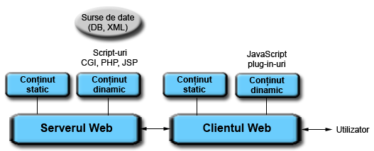

Data publicării: 27.04.2017
Autor articol: Sabin Buraga
Introducere
În contextul dezvoltării aplicațiilor Web de calitate, una dintre problemele importante – discutată în cadrul acest articol – este cea vizând securitatea generală a aplicațiilor și siturilor Web. Se iau în considerație, de asemenea, unele aspecte privitoare la riscurile de securitate și la detectarea vulnerabilităților din perspectiva tehnologiilor Web, precum injectarea de cod SQL sau XSS (Cross-Site Scripting).
Arhitectura generică a unei aplicații Web
Inițial, spațiul World Wide Web era compus din pagini (documente) statice – incluzând text și imagini, apoi elemente multimedia –, interconectate prin intermediul legăturilor hipertext (Buraga, 2005).
Aplicații de tip client (precum navigatoarele Web) erau folosite pentru accesarea – via adrese (adică URI – Uniform Resource Identifiers) – a reprezentării acestor resurse, stocate pe diverse servere Web. Programe suplimentare (plug-in-uri), incluse în navigatoarele Web, erau menite să redea tipuri de conținuturi nestandardizate sau proprietare (Word, Flash) etc. Actualmente, aceste tehnici au fost substituite de programe JavaScript, plus diverse API-uri moderne disponibile în cadrul specificației HTML5, cu concursul unor standarde sau suite de tehnologii suplimentare – a se studia lista The Web platform: Browser technologies.
Pentru a oferi conținut dinamic utilizatorilor, sunt adoptate diverse modalități programatice, reprezentate pe partea de server de servere de aplicații Web precum ASP.NET sau PHP (PHP: Hypertext Processor), plus diverse cadre de lucru (framework-uri) specifice – a se vizita situl dedicat materiei Tehnologii Web predate de autor la Facultatea de Informatică a Universității Alexandru Ioan Cuza din Iași (Buraga, 2017).
De remarcat faptul că o serie de elemente implementate funcționează drept componente middleware (generând, de fapt, o arhitectură 3-tier ori N-tier), reprezentând interfețe pentru accesarea unor (micro-)servicii aflate la distanță, plus a surselor de date/cunoștințe – e.g., disponibile grație unor sisteme relaționale de baze de date. Arhitectura generală a unei aplicații Web este prezentată în figura următoare.

Asigurarea securității Web
Un aspect important – dar care în cele mai multe cazuri este neglijat, din păcate – este cel al asigurării securității sitului/aplicației Web. Orice aplicație software – fie ea disponibilă pe o platformă desktop, mobilă, la nivel de Web sau “scufundată” în cadrul unui alt gen de dispozitiv computațional (e.g., automobil) – poate fi victima unui incident de securitate. Acest incident reprezintă frecvent un eveniment apărut în cadrul rețelei (cu sau fără fir), cu implicații asupra securității, provenind din interiorul sau din exteriorul organizației.
La momentul crearii, multe protocoale Internet (printre care se numără și protocolul HTTP – HyperText Transfer Protocol) nu au luat în calcul posibilele vulnerabilități se pot surveni. Vulnerabilitatea se referă la slăbiciunea unui sistem hardware și/sau software care permite utilizatorilor neautorizați să aibă acces asupra acestuia (Acostăchioaie, 2003). Niciun sistem informatic nu poate fi considerat 100% sigur, iar deseori vulnerabilitățile pot apărea datorită unei inadecvate administrări.
Niveluri și tipuri de atacuri
Nivelurile de atac pot varia de la unul oportunist (de exemplu, în scop “recreațional”, fără obiective/ținte clar definite) până la cel sofisticat (atacatorul are un obiectiv foarte bine conturat și poate poseda cunoștințe tehnice avansate, măsurile de prevedere obișnuite nereprezentând un impediment).
Atacurile se pot încadra în mai multe tipuri (Acostăchioaie, 2003), dintre care le menționăm pe următoarele:
Accesul la nivel de utilizator – atacatorul realizează atacul via un cont de utilizator obișnuit sau având privilegii superioare. De exemplu, eventual prin intermediul unor tehnici de tip social engineering (Granger, 2001; Jagatic et al., 2007), află sau ghicește parola unui vizitator și client al unui sit de comerț electronic. Dacă acel utilizator era și administratorul sitului, atunci potențialele pagube vor fi mult mai mari. Acțiunile pe care le poate întreprinde un atacator în cazul în care a avut succes sunt cele de obținere a unor date importante, de alterare a acestora, de asigurare a accesului ulterior ori de modificare a unor parametri ai sistemului.
Accesul de la distanță – nu necesită acces-utilizator la sistem, atacatorul încercând a realiza refuzuri de servicii (în cazul nostru, ale serverului Web) prin cereri incorecte ori prin trimiterea “în rafală” de solicitări – o astfel de tehnică se numește DOS (Denial Of Service), iar dacă atacurile sunt realizate simultan de pe mai multe mașini asistăm la apariția unui DDOS (Distributed Denial Of Service). Un astfel de atac poate viza și serviciile Web, API-urile publice aferente sau chiar aplicații exploatate la nivel de cloud.
Accesul de la distanță la diverse aplicații – presupune și trimiterea de date invalide aplicațiilor (Web), fără a necesita obținerea unui cont de utilizator. Două categorii principale de atacuri asupra siturilor Web sunt injectările de cod SQL (SQL injection) și XSS (Cross-Site Scripting). Dacă primul recurge la scrierea unor interogări SQL care să permită afișarea, alterarea ori ștergerea unor date din bazele de date aferente sitului în cadrul câmpurilor unor formulare sau direct în URI, al doilea consta în “injectarea” în cadrul sistemului, pentru rularea direct în browser, a programelor JavaScript. Aceste atacuri au efect și în cazul în care se folosește protocolul http ce recurge la criptarea conexiunilor via TLS (Transport Layer Security). Drept exemple de atacuri XSS le menționăm pe acelea în care un sit Web (de exemplu, un forum dedicat consumatorilor unui anumit produs) permite vizitatorilor să plaseze marcatori <img> (pe care i-am putea considera siguri la prima vedere) via un formular pentru a insera o imagine în cadrul mesajului redactat. Un utilizator rău-intenționat ar putea introduce o construcție de genul <img src=”javascript:cod” /> pentru a executa cod JavaScript (acest cod, de pildă, ar putea redirecționa unii vizitatori către altă adresă Web, cu implicații nefericite asupra reputației sitului în cauză). Pentru alte exemplificări, a se studia (Buraga, 2016).
Inocularea de programe pe calculatorul utilizatorului – prin intermediul script-urilor ori plug-in-urilor, atacatorul poate plasa programe de tip malware (viruși, spioni, cai troieni etc.) pe calculatorul (browser-ul) clientului, exploatând vulnerabilitatile ori bug-urile navigatorului Web. În acest mod, se pot apela programe în mod neautorizat, colecta și/sau distruge resurse, lansa atacuri spre alte sisteme de calcul, crea uși ascunse (traps sau backdoors) permițând acces ulterior la calculator ori obținerea unor privilegii etc.
Un posibil atacator poate exploata, de asemenea, configurațiile incorecte sau implicite ale serverelor/aplicațiilor Web. Pentru aceasta, nu trebuie decât să recurgă la un motor de căutare pentru a detecta posibile vulnerabilități. De pildă, pentru a avea acces la lista fișierelor dintr-un director, vom putea utiliza Google pentru a formula interogarea intitle:index.of “parent directory”. La fel, putem detecta versiunile unor servere Web prezentând bug-uri cunoscute care, cu puțin noroc, nu au fost încă remediate – detalii în (Buraga, 2005) și (Buraga, 2016).
Securitatea Web este un proces, nu un produs finit.
Recurgerea la măsuri de securitate
La întrebarea “La ce nivel trebuie luate măsuri de securitate?”, răspunsul este acela că aceste măsuri de siguranță trebuie adoptate la oricare nivel, principalele acțiuni fiind inhibarea ascultării mediilor de transmisie, interzicerea accesului fizic la server, instalarea zidurilor de protecție (firewall-urilor), criptarea conexiunilor, monitorizarea și actualizarea software-ului (sistem de operare, server Web, server de aplicații, server de baze de date, biblioteci și programe aferente etc.), jurnalizarea accesului, educarea utilizatorilor și adoptarea unor politici generale de securitate – a se vizita situl inițiativei OWASP (Open Web Application Security Project).
Elaborarea politicilor de securitate vizează, printre altele, următoarele aspecte:
planificarea cerințelor de securitate – se iau în considerație asigurarea confidențialității, integrității și disponibilității datelor, controlului asupra accesului etc.;
evidențierea riscurilor – se vor elabora scenarii de risc și se vor studia soluțiile care pot fi aplicate în fiecare caz în parte; de asemenea, se vor oferi răspunsuri la întrebări de genul “Cine decide care date sunt considerate importante?”, “Cât de critice sunt datele identificate?”, “Datele vor rămâme consistente după restaurarea în urma unui incident?”, “Ce pierderi de date vor putea exista și cum vor putea fi ele recuperate după un atac soldat cu succes?”, “Există un plan eficient de recuperare de după dezastru?”, “Care va fi perioada în care situl nu va fi operațional?” și altele.
analiza raportului cost–beneficii – trebuie evaluate costurile prevenirii incidentelor de securitate, ale refacerii după dezastru a sitului etc.
stabilirea politicilor de securitate – se adoptă atât o politică generală, la nivel național ori organizațional, dar și politici separate pentru diverse domenii protejate; tot aici, se poate recurge la studierea și aplicarea unor standarde, reglementări ori recomandări. De exemplu, șabloane de proiectare a securității unui sistem informatic (Okubo & Tanaka, 2008).
Supraviețuirea și analiza riscurilor
Un alt aspect important este cel referitor la supraviețuire care reprezintă capacitatea unui sistem de a-și îndeplini misiunea, în timp util, în pofida atacurilor, defectelor sau accidentelor survenite (Acostăchioaie, 2003). Dacă un atac reprezintă un eveniment potențial distrugător provocat intenționat de persoane rău-voitoare, un defect este tot un eveniment potențial distrugător cauzat însă de anumite deficiențe ale sistemului sau ale unui factor de care depinde acel sistem (de exemplu, defecte hardware, bug-uri software, erori realizate de utilizatori). Un accident semnifică un eveniment neprevăzut – de pildă, un dezastru natural sau o cădere de tensiune.
În mod ideal, sistemul ar trebui să-și ducă până la capăt misiunea chiar dacă unele componente sau părți ale acestuia sunt afectate ori scoase din uz. Sistemul trebuie măcar să ofere suport pentru îndeplinirea funcțiilor vitale (așa-numitele funcționalități mission-critical). De exemplu, în cazul unui sit de comerț electronic, vizitatorul ar trebui să aibă acces la catalogul produselor, cu toate că modulul de realizare a comenzilor nu este operațional în acel moment.
O aplicație trebuie să fie rezistentă la atacuri, pentru aceasta adoptându-se diverse strategii de respingere a atacurilor – e.g., validarea obligatorie a datelor provenite de la utilizatori, autentificarea utilizatorilor, utilizarea de firewall-uri, protejarea datelor importante prin criptare, acordarea privilegiilor minime și altele. O bună politică de securitate va lua în considerație și recunoașterea manierei de efectuare a atacurilor și a efectelor acestora, aplicându-se tehnici pentru restaurarea datelor, limitarea efectelor negative, menținerea/restaurarea serviciilor compromise etc. De asemenea, sistemul trebuie să se adapteze la atacuri, recurgând la strategii pentru îmbunătățirea șanselor de supraviețuire, învățând și din greșelile făcute. Astfel, securitatea e un proces și nu un produs finit.
O metodologie standardizată de testare a securității este OSSTMM (Open Source Security Testing Methodology Manual), fiind independentă de factori comerciali, industriali ori politici.
Aspecte privind securitatea generică a aplicațiilor Web
Securitatea unei aplicații Web trebuie să considere factori precum arhitectura, maniera de procesare (funcționalitățile oferite), codul-sursă și conținutul (datele) în ansamblu. Securitatea aplicației Web nu vizează în principal vulnerabilitățile sistemului de operare ori deficiențele (bug-urile) unor programe auxiliare, ci se concentrează asupra prevenirii, descoperirii și remedierii vulnerabilităților codului propriu (elaborat de către autorii acelei aplicații).
Deseori, vulnerabilitățile unui sit particular nu sunt “celebre” precum cele ale unor produse bine-cunoscute, cu toate că ar putea fi vulnerabil la o categorie aparte (precum injectarea de cod SQL). Aceasta are drept consecință faptul că nu vom recepționa buletine de informare publică privitoare la vulnerabilitățile găsite și că nu ne putem baza pe repararea codului de către producatorul software-ului, din moment ce este scris de către noi înșine (excepție fac aplicațiile/serviciile externe integrate în cadrul aplicației noastre).
Conform OWASP, principalele tipurile de vulnerabilități sunt problemele de autentificare, managementul sesiunilor, injectarea de script-uri ori comenzi SQL, plus expunerea involuntară – sau în urma unui concurs de împrejurări – a informațiilor cu caracter “delicat” (information disclosure). Un alt aspect important este cel al asigurării securității serviciilor Web care necesită integrarea securității aplicațiilor la nivel de întreprindere (EASI – Enterprise Application Security Integration), deoarece se pot adopta tehnologii (soluții) de securitate multiple situate în zone de interes diferite: server Web, componente middleware, servere de stocare, aplicații convenționale etc.
Suplimentar, trebuie remarcat faptul că riscurile de securitate nu vizează doar proprietarul sitului, ci și utilizatorul final. Din această perspectivă, un sit vulnerabil, nesigur, poate cauza disconforturi financiare, de performanță, psihologice, sociale ori de timp.
Testarea diverselor categorii de vulnerabilități se poate realiza recurgând la instrumente software disponibile liber, precum cele enumerate de situl SecTools.
Referințe bibliografice
- Acostăchioaie, D., Securitatea sistemelor Linux, Polirom, Iasi, 2003.
- Buraga, S., Tehnologii Web, Facultatea de Informatică, UAIC Iași, România, 2017: http://profs.info.uaic.ro/~busaco/teach/courses/web/
- Buraga, S., Securitatea aplicațiilor Web, Facultatea de Informatică, UAIC Iași, România, 2016: http://www.slideshare.net/busaco/1313-web-securitatea-aplicatiilor-web
- Buraga, S., Proiectarea siturilor Web (ediția a doua), Polirom, 2005 – varianta electronică este disponibilă online la http://www.slideshare.net/busaco/sabin-buraga-proiectarea-siturilor-web
- Granger, S., “Social Engineering Fundamentals, Part I: Hacker Tactics”, SecurityFocus, 2001.
- Janatic, T. et al., “Social Phishing”, Communications of the ACM, Volume 50, Issue 10, October 2007.
- Okubo, T., Tanaka, H., “Web security patterns for analysis and design”. In Proceedings of the 15th Conference on Pattern Languages of Programs. ACM, 2008.
- * * *, OSSTMM (Open Source Security Testing Methodology Manual), 2017: http://www.isecom.org/research/osstmm.html
- * * *, OWASP (Open Web Application Security Project), 2017: http://www.owasp.org/
- * * *, SecTools, 2017: http://sectools.org/
- * * *, The Web platform: Browser technologies, 2017: http://platform.html5.org/